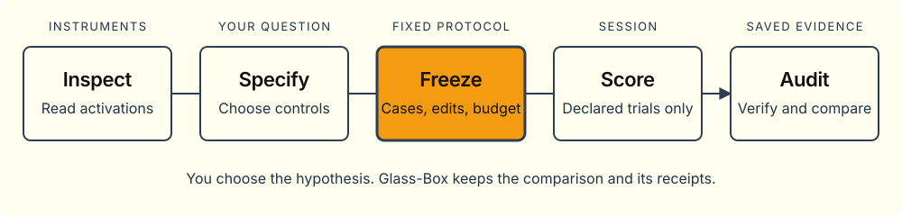

Python library · 0.1.0 · initial adapter: LFM3-1.7B
Inspect activations.
Test a fixed hypothesis.
Read internal signals, make a scoped edit, and compare fixed likelihood scores. You choose the question and controls. Glass-Box retains the protocol, attempts and receipts.
Python 3.12 · macOS and Linux · Apache-2.0 · no weights bundled

- InspectRead activations
- SpecifyChoose the question and controls
- FreezeFix cases, edits and budget
- ScoreExecute declared trials only
- AuditVerify and compare saved evidence
Instruments for the question. A framework for the test.
- Inspect and intervene
- Activation probes, local gradient attribution, finite ablations and temporary patches. Select a native site and predictor-position scope.
- Freeze the comparison
- Explicit cases, conditions, objectives, discovery/validation splits and budgets. Serialized local or remote sessions execute fixed scoring trials.
- Keep the evidence
- Protocol fingerprints, attempt journals and raw receipts. Resume without silently retrying started trials; verify and report offline.
Start without a model
Install the core library, export the examples, and run a complete synthetic study.
No weights, PyTorch, API key or worker are needed. The invented scores test software behavior, not a model finding.
git clone https://github.com/xmattwest/glass-box.git
cd glass-box
python3.12 -m pip install .
glass-box examples --output ./my-studies
glass-box validate ./my-studies/code_retrieval.json
python3.12 ./my-studies/fake_walkthrough.py \
--output ./synthetic-demo --summary
glass-box report ./synthetic-demo/code-retrieval-mechanics-v2
python3.12 ./my-studies/audit_controls.py \
./synthetic-demo/code-retrieval-mechanics-v2 --tolerance 0.000001A likelihood change is not generated correctness, a native circuit or a practical benefit.
The initial adapter targets one pinned LiquidAI/LFM3-1.7B revision. Greedy generation is an instrument, not a correctness benchmark. Model loading, downloads and paid resources require separate authorization.
Choose the reference for your task
- Visual walkthroughWorkflow, native sites, block anatomy and predictor scopes.
- Library guidePython usage, ownership, budgets and evidence.
- Searchable API referenceSignatures, fields, methods and constants, generated statically.
- Agent guideSmallest entry points, operation payloads, failures and safe usage.
Develop the library. Keep experiments separate.
Public source includes portable instruments, contracts, synthetic fixtures and documentation. Study plans, analysis, exact environments and immutable live evidence belong in a separate research workspace.
Research and library boundaries · Release checks · Maintain the documentation site